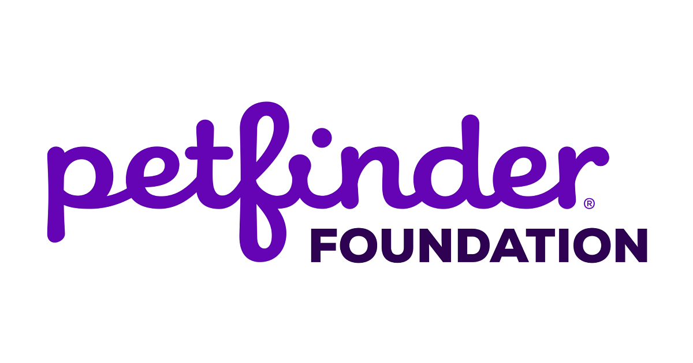
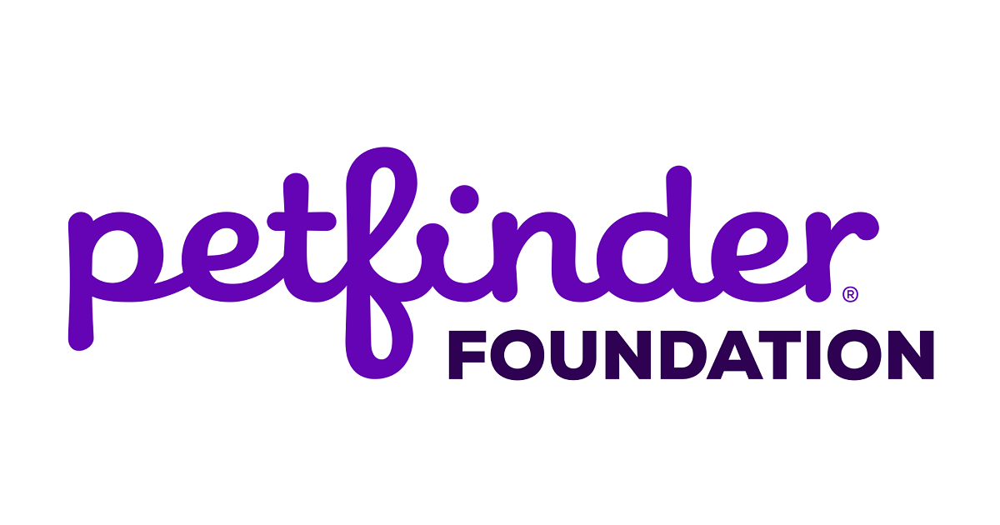

The Petfinder Foundation supports the shelters and rescue groups that post their adoptable pets on Petfinder.com. Our mission is to prevent the euthanasia of adoptable pets. A nonprofit 501(c)3 public charity, we help organizations throughout North America increase adoptions, respond to and recover from disaster, and become more sustainable. The Petfinder Foundation provides cash and product grants so that homeless pets can be physically and mentally healthy and, ultimately, find loving forever homes.
Unfortunately, we are unable to answer questions about Petfinder.com, the adoption website. If you need to contact someone at Petfinder.com, please use one of the following email addresses: If you are a Petfinder member shelter or rescue group, contact outreach@petfinder.com. If you are having problems using Petfinder, contact help@petfinder.com. If you would like to comment on an experience you have had with a shelter or rescue group while trying to adopt a pet, contact If you have found a pet on Petfinder whom you are interested in adopting, contact the shelter or rescue group that is caring for the pet. If you have a pet who needs a new home, contact shelters or rescue groups near you. You can search for adoption groups near you here.